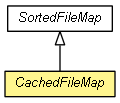

org.eclipse.net4j.util.io
Class CachedFileMap<K extends Comparable<K>,V>
java.lang.Object
 org.eclipse.net4j.util.io.SortedFileMap<K,V>
org.eclipse.net4j.util.io.CachedFileMap<K,V>
org.eclipse.net4j.util.io.SortedFileMap<K,V>
org.eclipse.net4j.util.io.CachedFileMap<K,V>
- All Implemented Interfaces:
- Closeable
public abstract class CachedFileMap<K extends Comparable<K>,V>
- extends SortedFileMap<K,V>

| Methods inherited from class org.eclipse.net4j.util.io.SortedFileMap |
close, getEntryCount, getEntrySize, getFile, getKey, getKeySize, getMaxKey, getPosition, getRandomAccessFile, getValue, getValuePosition, getValueSize, readKey, readValue, search, writeKey, writeValue |
| Methods inherited from class java.lang.Object |
clone, equals, finalize, getClass, hashCode, notify, notifyAll, toString, wait, wait, wait |
CachedFileMap
public CachedFileMap(File file,
String mode)
get
public V get(K key)
- Overrides:
get in class SortedFileMap<K extends Comparable<K>,V>
put
public V put(K key,
V value)
- Overrides:
put in class SortedFileMap<K extends Comparable<K>,V>
Copyright (c) 2004 - 2011 Eike Stepper (Berlin, Germany) and others.